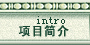
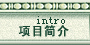

水本不是蓝色，是蔚蓝天空映蓝的这护城河水；水也本不是绿色，是夹岸的垂柳染绿了这古老的城池。水本无涟漪，是风，是鱼，是朝气蓬勃的赛艇健儿拨弄着静静的水面，也拨弄着每个来到这里的人的心。
我从秋季来到阳春门，一夜大雨过后，笔直而幽静的人 行道上铺满了金黄色的落叶，仿佛童话但又触手可及。我在冬季守侯阳春门，没有大雪为伴，让我不能见到她银装素裹的模样。然而，我却在一个十分晴朗的午后透过树影见到了那蔚蓝、那波光粼粼、那给人海的错觉的 护城河。我醉了，竟把冬日当夏日，兴奋的拨通电话，与远方的朋友回忆着那快乐的夏日海滩。我在 春季走进阳春门，绿树相依、古城为伴、微风送暖、城池献瑞……
一切是那么的生机盎然，让人不自主的去热爱生活、热爱这个美丽的地方。每次靠近她，总能发现有新的花朵绽放，黄色迎春、红色春梅、白色玉兰还有人面桃花……夏天应该是阳春门最热闹的时候，初夏时节每天都有幸福的新人们来这里拍婚裟，每个新娘都是那么笑容的迷人，而每个新郎的眼 神又都是那么的深邃和明亮。而他们的笑丝毫没有打扰树下偎依的恋人，他们相拥、相视、相吻眼中 只有对方，心中只有彼此。散步和遛鸟的老人们看到他们笑了，而孩子们是最高兴的。他们和家人一 起荡舟、在小商店里搜索着自己喜欢的美食和冷饮，跟小狗在草地上追逐，直到夕阳落到了仲宣楼上，直到晚霞映红了天空和云朵，人们才渐渐散去。而在这时，闪亮的彩灯又把阳春门推向了另一个新的高潮，饭后凉爽的晚风中，一对对中年夫妇在音乐声中翩翩起舞，旋律带走了他们一身的疲惫，带来了无尽的欢乐……
|
 
